Each "after" image is the real worktree app (same components, classes and fonts) with only the proposed change added. "Before" is the same screen today. All names and addresses are fictional; real data was redacted in the page before capture. See plan.md for the rules.
The Email / Phone row keeps its input, which is the primary; typing over it replaces the address. Secondaries are listed underneath as plain text with Make primary and Remove links. A permanently failing address shows a Bounced badge. "+ Add another address" is a small link.
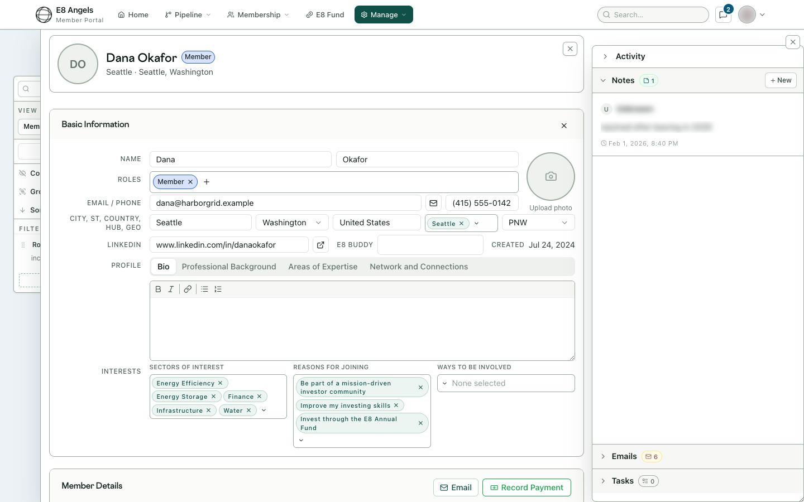
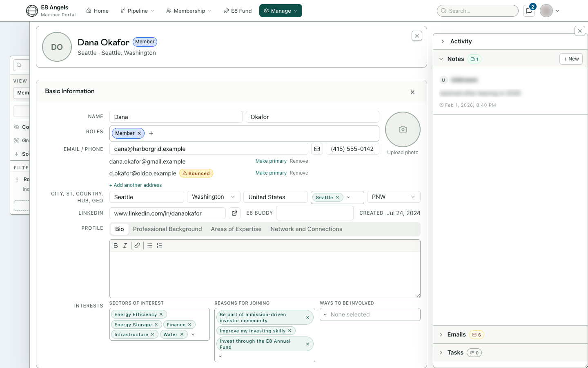
The only change is the "+ Add another address" link under the input.
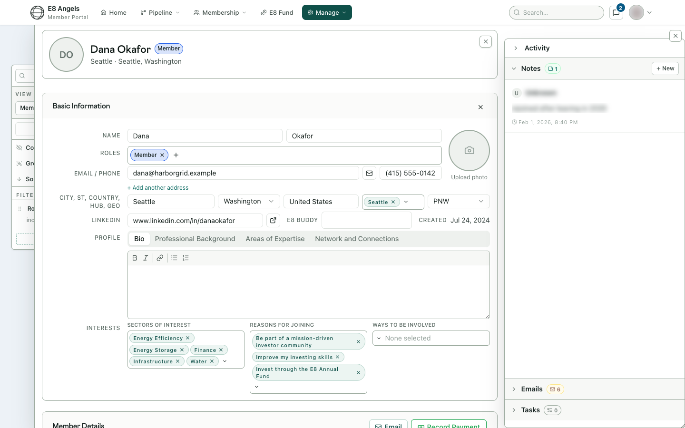
The added address doesn't save. A red line names the person who holds it, links to their record, and offers People Merge. The rule is one person per address in any casing (the same rule as PR #1020).
Shown only when the person has signed in before or holds admin access, 2FA or a data-connector grant. Replace deletes the old address; there is no option to keep it. Everyone else's edit autosaves as it does today.
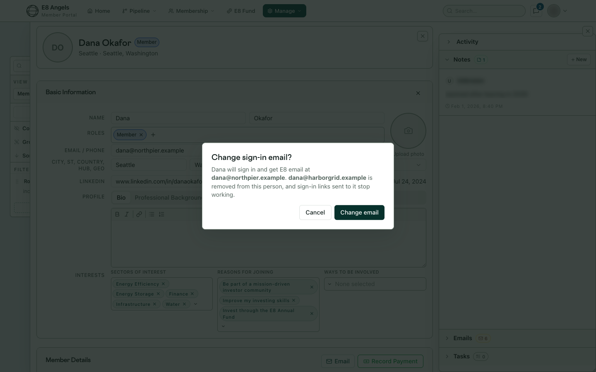
The field looks the same as today, but saving a new address now sends a verification link to it. The current address stays until the member clicks the link, and is then deleted. A notice under the field shows the pending change and lets them cancel it.
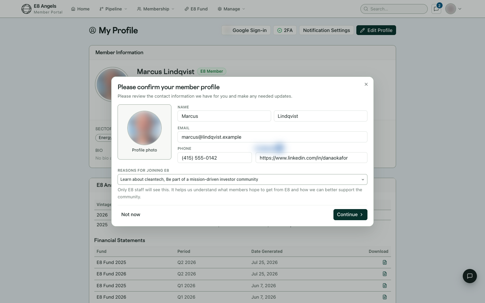
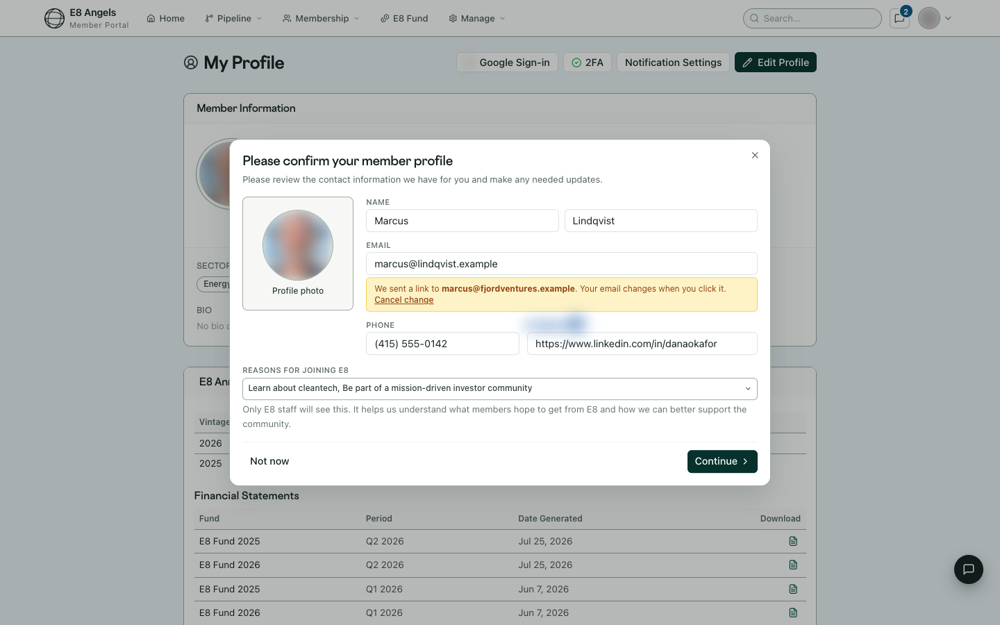
Only for people who already have several addresses (added by an admin or a merge). Every address is editable, and each secondary has a remove ×. An edited address needs verification before it is saved. There is still no way to add a new address here.
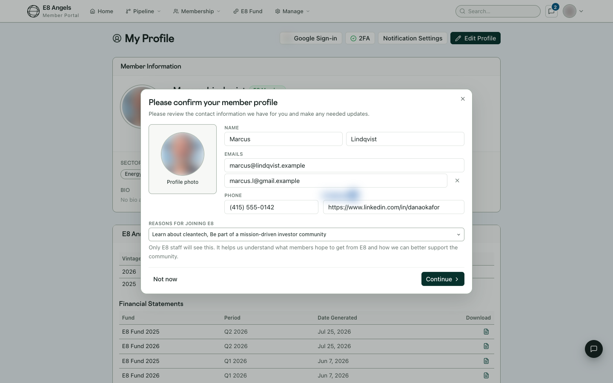
Uses the existing entrepreneur wording and never names the person who holds the address.
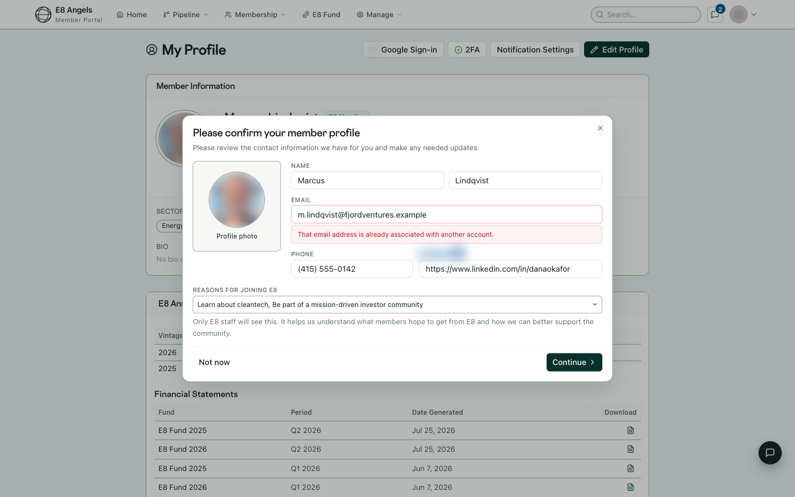
Every address is shown, primary first and comma-separated, and each one is its own mailto link.
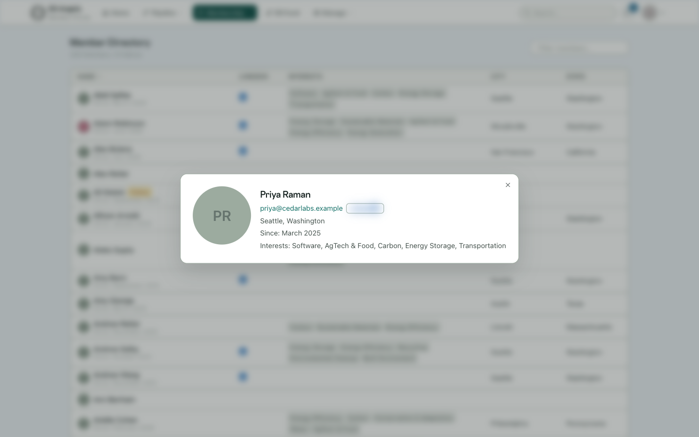
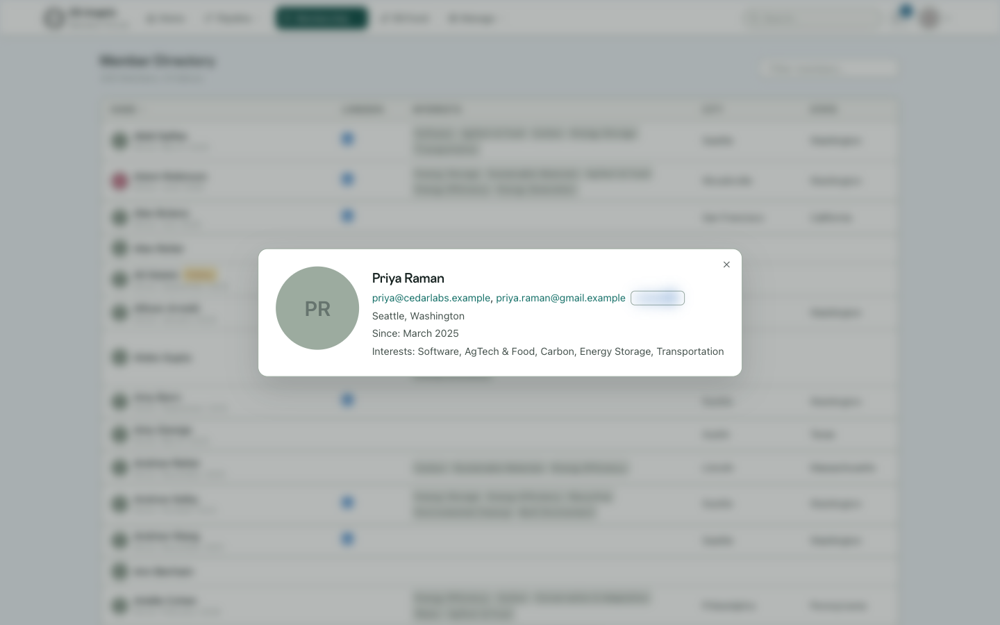
The section title becomes "Email addresses", and an "Also" row lists each secondary with a Remove button. "Change email" (which replaces the primary) is unchanged. With one address the page doesn't change at all. Sign-up still asks for a single email.
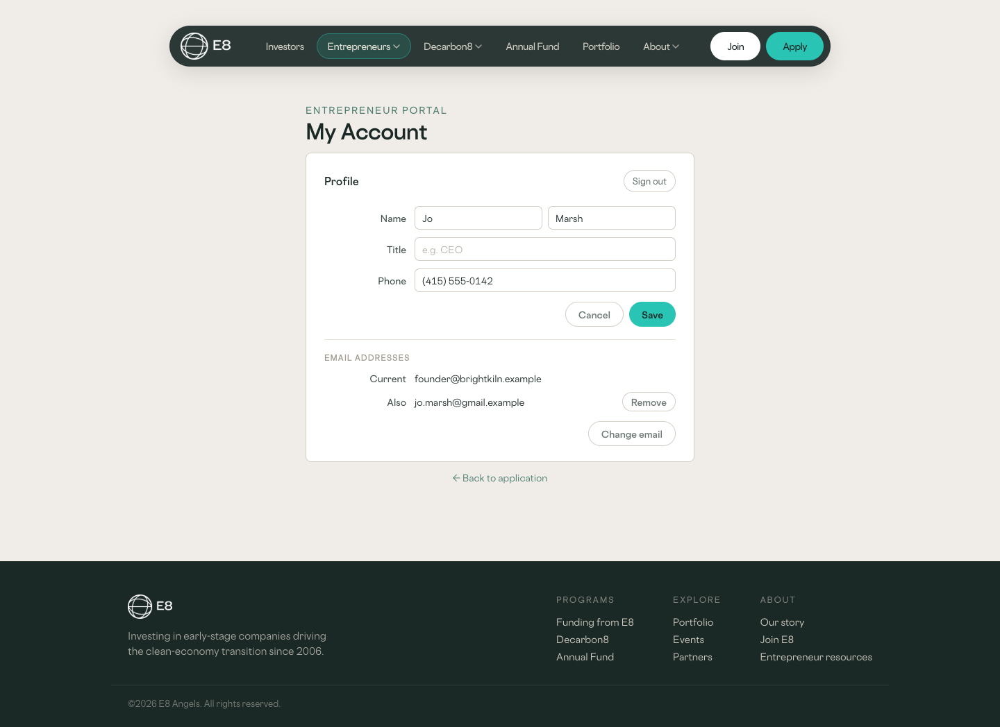
This is the existing pending banner, with one added sentence: once the new address is confirmed, the current one is removed rather than kept.
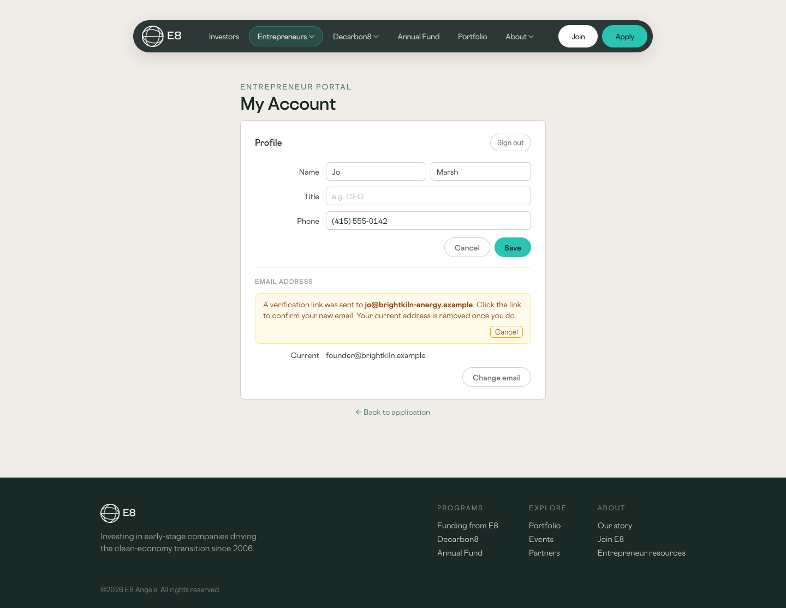